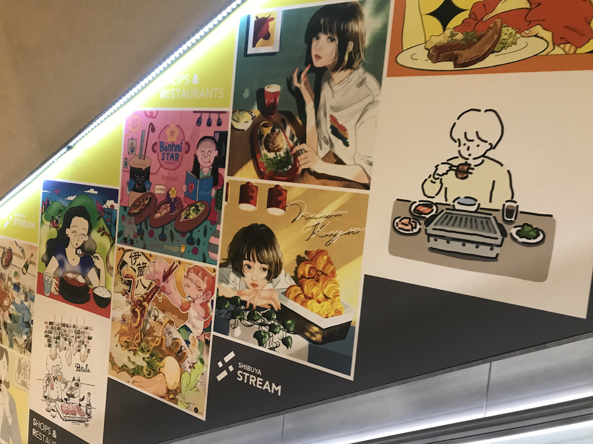
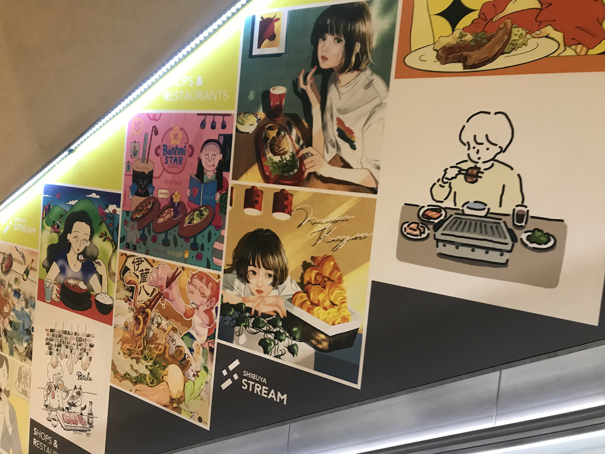

2枚目は、渋谷ストリームと渋谷駅をつなぐエスカレーターの横の壁に掲載されていた
イラストレーターと渋谷ストリーム内の飲食店とのコラボポスターです。
渋谷ストリーム館内には、カフェやレストランから居酒屋や中華料理屋まで様々な飲食店があり、その多種多様性と
日本の文化の中心地たる渋谷という街を多様なイラストレーターの作品によって表現している点が非常に面白い点です。
また、このポスターは、エスカレーターという人の流れが流動的な場所であるためから、
どのポスターも各イラストレーターの個性が出ながらも、どのお店で何のお店かが一目見てわかるという点で、
非常に機能的な面もあるということがわかります。
↓紹介サイト
人気イラストレーター×渋谷ストリーム 紹介サイト
渋谷ストリーム 公式サイト